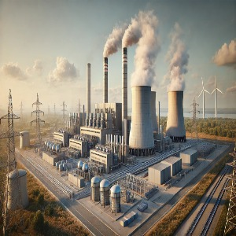
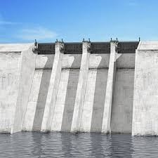
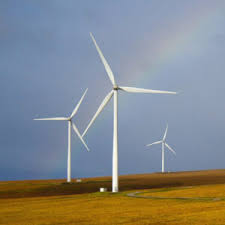

Introducción
Las provincias de Salta, Jujuy y Tucumán proponen una colaboración estratégica
para aprovechar sus recursos energéticos y minerales. El objetivo es
construir una planta de almacenamiento de energía para exportar excedentes a países vecinos.
Imágenes del Proyecto



Jujuy
- Extracción anual de 17,500 toneladas de litio.
- Ganancia anual esperada: $198,625,000.
- Proyectos en curso: exportación a Japón y China, mejora en cableado para distribución.
Salta
- Producción de energía solar, eólica, e hidroeléctrica.
- Proyectos recomendados: Parque Solar Los Colorado (100 MW), Hidroeléctrica Cabra Corral Planta (120 MW).
- Capacidad para obtener $88 millones de ganancias por exportación de litio.
Tucumán
- Generación de energía hidroeléctrica, solar y térmica.
- Gestión de financiación mediante impuestos a empresas líderes del sector.
- Capacidad instalada: 7596 GWh, con excedente de 4766 GWh.
Conclusión
La colaboración entre estas tres provincias permitirá un desarrollo económico sostenible
y posicionará a la región como líder en exportación de energías renovables.